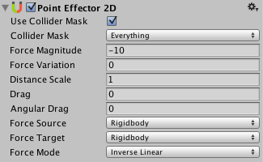

Point Effector 2D
The Point Effector 2D applies forces to attract/repulse against a source point which can be defined as the position of the rigid-body or the center of a collider used by the effector. When another (target) collider comes into contact with the effector then a force is applied to the target. Where the force is applied and how it is calculated can be controlled.
Colliders that you use with the effector would typically be set as triggers so that other colliders can overlap with it to have forces applied however, non-triggers will still work but forces will only be applied when colliders come into contact with it.

Properties
| Property: | Function: |
|---|---|
| Use Collider Mask | Should the 'Collider Mask' property be used? If not then the global collision matrix will be used as is the default for all colliders. |
| Collider Mask | The mask used to select specific layers allowed to interact with the effector. |
| Force Magnitude | The magnitude of the force to be applied. |
| Force Variation | The variation of the magnitude of the force to be applied. |
| Distance Scale | The scale applied to the distance between the source and target. When calculating the distance, it is scaled by this amount allowing the effective distance to be changed which controls the magnitude of the force applied. |
| Drag | The linear drag to apply to rigid-bodies. |
| Angular Drag | The angular drag to apply to rigid-bodies. |
| Force Source | The force source is the point that attracts or repels target objects. The distance from the target is defined from this point. |
| Collider | The source point is defined as the current position of the collider. |
| Rigidbody | The source point is defined as the current position of the rigidbody. |
| Force Target | The force target is the point on a target object where the effector applies any force. The distance to the source is defined from this point. |
| Collider | The target point is defined as the current position of the collider. Applying force here can generate torque (cause the target to rotate) if the collider isn't positioned at the center-of-mass. |
| Rigidbody | The target point is defined as the current center-of-mass of the rigidbody. Applying force here will never generate torque (cause the target to rotate). |
| Force Mode | How the force is calculated. |
| Constant | The force is applied ignoring how far apart the source and target are. |
| Inverse Linear | The force is applied as a function of the inverse-linear distance between the source and target. When the source and target are in the same position then the full force is applied but it falls-off linearly as they move apart. |
| Inverse Squared | The force is applied as a function of the inverse-squred distance between the source and target. When the source and target are in the same position then the full force is applied but it falls-off squared as they move apart. This is similar to real-world gravity. |